Centri Notturni
| Oasi del Clochard |
Via Lombroso 99 |
Donne e uomini |
| Casa Jannacci (Comune) |
Viale Ortles 69 |
Donne e uomini |
| Fondazione Progetto Arca |
Via Aldini 64 |
Donne e uomini |
| Angel Service |
Via Graf 29 |
Donne, uomini e cani |
| Remar |
Via Belluno 33 |
Donne |
| Fondazione Fratelli San Francesco |
Via Saponaro 40 |
Uomini |
 Centri Diurni
Centri Diurni
| Remar |
Via Pedroni 30 |
| City Angels |
Via Pollini 4 |
| Farsi Prossimo ONLUS |
Via Padre Salerio |
| Associazione l'Albero della Vita |
Via da Carcano |
| Progetto Arca Onlus |
Via Andolfato |
| Fuori Luoghi (Casa Chiaravalle) |
Via Sant'Arialdo 69 |